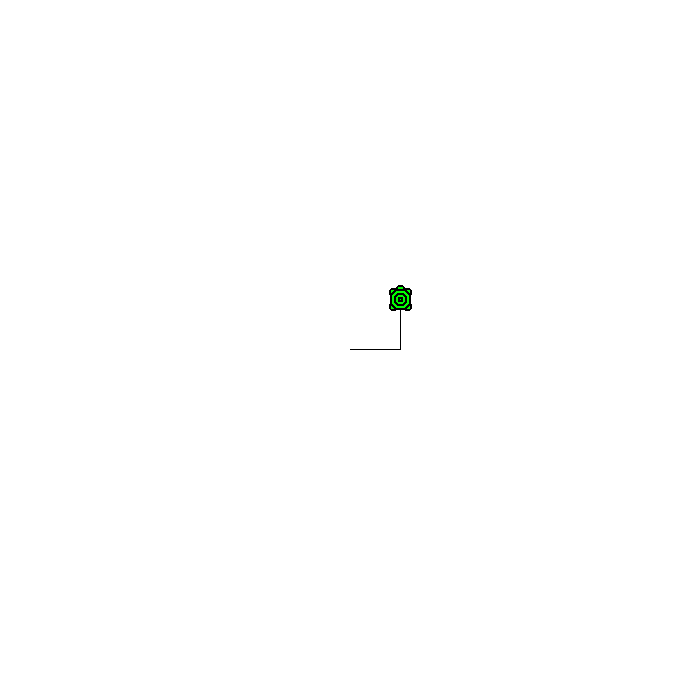
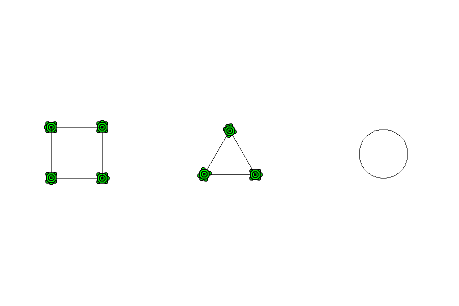
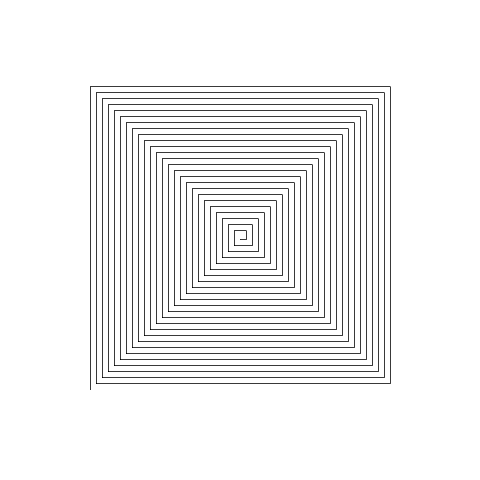
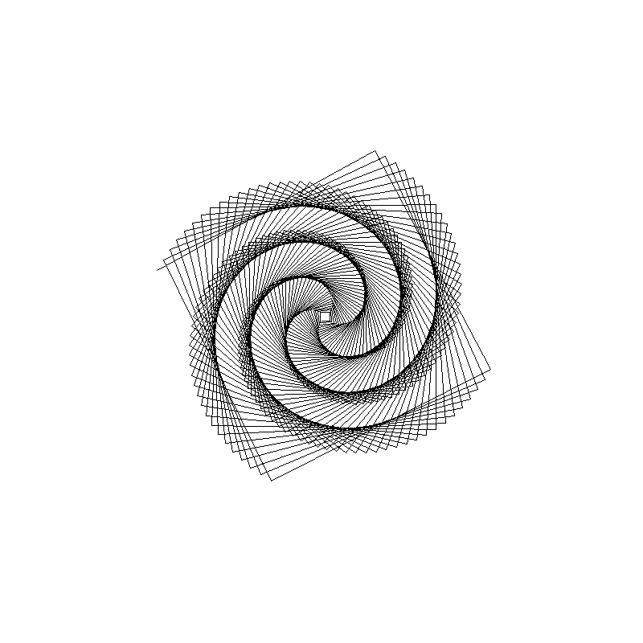
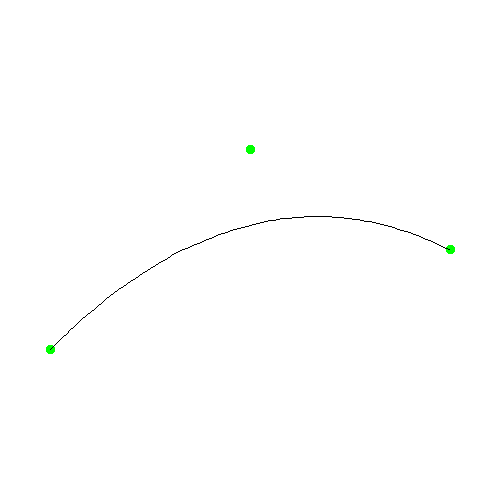

TP1 - Tortue graphique et tracés paramétrisés.
Dans ce premier TP, nous allons nous intérésser à la réalisation de graphiques à partir d'équations dans le plan et d'instructions algorithmiques. Pour ce faire nous utilisons une librairie graphique nommée Turtle. Aussi connue sous le nom de tortue graphique en français
Il s'agit d'une librairie en langage Python mais une version simplifiée en langage C existe ici. Nous allons utiliser cette version simplifiée pour réaliser nos graphiques.
Dans un premier temps nous mettrons en place l'environnement de travail, pour y réaliser des figures géométriques simples. Puis nous nous intéresserons à réaliser deux types de tracés paramétrisés. Enfin pour les étudiants les plus avancées, nous réaliserons le tracé d'une fractale de Von Koch.
Tables des matières
Mise en place de l'environnement de travail
Il est primordial de respecter l'organisation des fichiers et les instructions de compilation pour que le programme marche. Merci de vérifier que vous avez bien faites toutes les étapes avant de demander l'aide de votre professeur
Dans un premier temps, nous avons besoin de créer un dossier pour le projet que l'on va nommer TP1_nom1_nom2. Dans ce dossier y télécharger les fichiers suivants:

Créer alors un dossier Figures dans lequel nous stockerons les tracés générés sous la forme d'une image. Enfin, créer un fichier exemple_basique.c dans lequel mettre le code suivant:
#include "turtle.h"
int main()
{
turtle_init(700, 700);
turtle_forward(50);
turtle_turn_left(90);
turtle_forward(50);
turtle_draw_turtle();
turtle_save_bmp("Figures/exemple_basique.bmp");
return EXIT_SUCCESS;
}Compiler le programme avec la commande suivante dans le terminal:
gcc -o exemple_basique exemple_basique.c turtle.c -lmUne image exemple_basique.bmp devrait être générée dans le dossier Figures et ressembler à celle dans la marge.
Expliquer alors ce que ce programme fait et chaque ligne de celui-ci. Explqiuer également la commande de compilation.
Pour la suite nous réaliserons des fichiers nommés exercice_1, exercise_2, etc... pour chaque exercice. Ces fichiers seront à compiler de la même manière que l'exemple basique.
On utilisera également d'autres fonctions de la librairie, dont une référence est donnée en annexe. Vous êtes encouragés à regarder dans le fichier turtle.c pour vous faire une idée des mécanisme internes de la librairie.
Exercice 1 - Figures géométriques
A l'aide de votre compréhension de la librairie, réaliser les figures suivantes :Il est conseillé de réaliser des fonctions qui réalisent les figures à partir d'une coordonnée centrale et des paramètres de la figure
- Un carré dont le côté, paramétrisé par une variable, est de 300 pixels.
- Un triangle équilatéral dont le côté, paramétrisé par une variable, est de 300 pixels.
Nous allons ensuite réaliser un cercle de rayon donné. Même s'il existe une instruction dans la librarie, on ne se basera que sur les fonctions turtle_forward et turtle_turn_left pour réaliser cette figure en réalisant un polygone régulier avec beaucoup de côtés comme une approximation. Pour cela, on défini un nombre \(n_{\mathrm{steps}}\) qui représente le nombre de côtés du polygone régulier qui approche le cercle. On peut alors définir le pas \(p\) de la manière suivante:
$$
p = \frac{2\pi r}{n_{\mathrm{steps}}},
$$
ainsi qu'un angle \(\alpha\) de la manière suivante:
$$
\alpha = \frac{360}{n_{\mathrm{steps}}}.
$$
- Comment faire à partir de ces trois variables pour réaliser une approximation du cercle?
- Réaliser un cercle de rayon 300 pixels.
- Que se passe t-il pour un grand nombre de côtés (\(\approx 10000\)) ? Expliquer ce comportement.
Enfin réaliser la figure suivante:

Exercice 2 - Trajectoires spirales
On veut réaliser une figure en trajectoire spiralée à partir du principe suivant :
- La tortue avance d'une certaine distance \(d_0\);
- La tortue tourne d'un certain angle \(\alpha\) vers la droite;
- On augmente la distance d'avance de la tortue d'un pas donné \(p\) : \(d_i = d_{i-1} + p\), tout en conservant l'angle intact;
- On répète les étapes 1 à 3 un nombre \(n\) de fois.
Réaliser un programme sur ce principe qui permet de pouvoir changer facilement les paramètres de la trajectoire. Par exemple avec \(\alpha = 90^\circ\), \(d_0 = 10\), \(p = 1\) et \(n = 100\) on aura (à gauche) alors qu'avec \(d_0=10\), \(p=1\), \(\alpha=91\) et \(n=300\) on aura (à droite) :


- Réaliser un programme qui permet de générer des figures similaires à celles ci-dessus.
- Essayer de jouer avec les paramètres pour obtenir des figures en triangle, en hexagone, etc...
- Que se passe t-il si on introduit un pas de distance aléatoire? (On pourra utiliser
rand()pour cela, tout en se renseignant sur son utilisation).
Exercice 3 - Courbes de bézier quadratiques
On s'intérésse maintenant à réaliser des courbes de Bézier quadratiques. Ces courbes sont définies par 3 points \(P_0\), \(P_1\) et \(P_2\). La courbe est alors définie par les points de la forme: \[ Q(t) = (1-t)^2 P_0 + 2(1-t)t P_1 + t^2 P_2, \] où \(t \in [0,1]\) est un paramètre de la courbe. On peut alors définir la courbe comme une suite de points \(Q(t)\) pour \(t \in [0,1]\). Ce processus est expliqué dans l'animation suivante:
Pour une vidéo détaillée sur le sujet voir cette vidéo.
Les courbes de Bézier sont des outils très important en infographie et en design. On peut les utiliser pour réaliser des formes complexes et lisses. On peut également les utiliser pour réaliser des animations et des transitions.
On se propose de réaliser un programme qui à partir de trois points \(P_0\), \(P_1\) et \(P_2\) réalise une courbe de Bézier quadratique à partir de l'équation précédente et d'une discrétisation de \(t\).
- Proposer une
structpour représenter un point dans le plan.Se référer à cette page pour des exemples. - Coder une fonction d'interpolation linéaire entre deux points en entrée, et une variable \(t\in[0,1]\) et qui renvoie un point.
- Coder une fonction qui réalise une courbe de Bézier quadratique à partir de trois points et d'une discrétisation de \(t\). Pour cela, on fera trois interpolations à chaque pas de temps (entre P1 et P2, P2 et P3 et entre les deux points prduits) comme dans l'animation précédente. On tracera alors la ligne entre les segments succesifs entre pas de temps.
On pourra alors produire des figures telles que:

* Exercice 4 - Fractale de Von Koch
Pour les plus avancés d'entre vous, on propose de réaliser une fractale de Von Koch. Cette fractale est définie de la manière suivante:
- On part d'un segment de longueur \(L\);
- On divise ce segment en trois segments de longueur \(L/3\);
- On construit un triangle équilatéral sur le segment du milieu;
- On retire le segment du milieu;
- On répète les étapes 2 à 4 un nombre \(n\) de fois sur les segments obtenu à l'étape précédente.
En réalisant cette procédure sur trois segments d'un triangle équilatéral, on obtient la fractale de Von Koch:

Réaliser alors cette figure à l'aide de Turtle.On pourra utiliser une fonction récursive pour réaliser cette figure. En cas de difficulté on pourra s'aider de cette page.
Référence de la librairie Turtle
Initialization and cleanup:
void turtle_init(int width, int height);
Initialize the 2d field that the turtle moves on. This must be called before any of the other functions in this library.void turtle_cleanup();
Clean up any memory used by the turtle graphics system. Call this at the end of the program to ensure there are no memory leaks.
Basic movement:
void turtle_forward(int pixels);
Move the turtle forward, drawing a straight line if the pen is down.void turtle_backward(int pixels);
Move the turtle backward, drawing a straight line if the pen is down.void turtle_turn_left(double angle);
Turn the turtle to the left by the specified number of degrees.void turtle_turn_right(double angle);
Turn the turtle to the right by the specified number of degrees.void turtle_goto(int x, int y);
Move the turtle to the specified location, drawing a straight line if the pen is down. Takes integer coordinate parameters.void turtle_goto_real(double x, double y);
Move the turtle to the specified location, drawing a straight line if the pen is down. Takes real-numbered coordinate parameters, and is also used internally to implement forward and backward motion.
Status and drawing properties:
void turtle_reset();
Reset the turtle's location, orientation, color, and pen status to the default values: center of the field (0,0), facing right (0 degrees), black, and down, respectively).void turtle_backup();
Creates a backup of the current turtle. Once you have a backup you can restore from a backup using turtle_restore(); This is useful in complex drawing situations.void turtle_restore();
Restores the turtle from the backup. Note that the behavior is undefined if you have not first called turtle_backup().void turtle_pen_up();
Set the pen status to "up" (do not draw).void turtle_pen_down();
Set the pen status to "down" (draw).void turtle_begin_fill();
Start filling. Call this before drawing a polygon to activate the bookkeeping required to run the filling algorithm later.void turtle_end_fill();
End filling. CAll this after drawing a polygon to trigger the fill algorithm. The filled polygon may have up to 128 sides.void turtle_set_heading(double angle);
Rotate the turtle to the given heading (in degrees). 0 degrees means facing to the right; 90 degrees means facing straight up.void turtle_set_pen_color(int red, int green, int blue);
Set the current drawing color. Each component (red, green, and blue) may be any value between 0 and 255 (inclusive). Black is (0,0,0) and white is (255,255,255).void turtle_set_fill_color(int red, int green, int blue);
Set the current filling color. Each component (red, green, and blue) may be any value between 0 and 255 (inclusive). Black is (0,0,0) and white is (255,255,255).
Drawing:
void turtle_dot();
Draw a 1-pixel dot at the current location, regardless of pen status.void turtle_draw_pixel(int x, int y);
Draw a 1-pixel dot at the given location using the current draw color, regardless of current turtle location or pen status.void turtle_fill_pixel(int x, int y);
Draw a 1-pixel dot at the given location using the current fill color, regardless of current turtle location or pen status.void turtle_draw_line(int x0, int y0, int x1, int y1);
Draw a straight line between the given coordinates, regardless of current turtle location or pen status.void turtle_draw_circle(int x, int y, int radius);
Draw a circle at the given coordinates with the given radius, regardless of current turtle location or pen status.void turtle_draw_turtle();
Draws a turtle.
Output:
void turtle_save_bmp(const char *filename);
Save current field to a .bmp file.void turtle_begin_video(int pixels_per_frame);
Enable video output. When enabled, periodic frame bitmaps will be saved with sequentially-ordered filenames matching the following pattern: "frameXXXX.bmp" (X is a digit). Frames are emitted after a regular number of pixels have been drawn; this number is set by the parameter to this function. Some experimentation may be required to find a optimal values for different shapes.void turtle_save_frame();
Emit a single video frame containing the current field image.void turtle_end_video();
Disable video output.